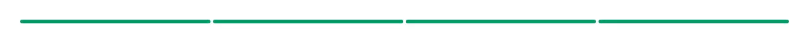

A password strength meter for a sign-up, registration, change-password or reset-password form — the bar under the password field that says Weak or Strong, plus one line saying why. It scores how many guesses a password would survive rather than ticking off one uppercase, one number, one symbol: composition rules push people toward Password1!, which is guessed instantly, and reject correct horse battery staple, which is not. NIST SP 800-63B says the same — screen against known-bad passwords and let length do the work. It detects the things that make a password look random without being random: entries from a built-in list of the passwords that top every breach dump (folded through leet substitutions, so P@ssw0rd is found where password is, and unaffected by capitalisation), repeated characters, runs through the alphabet or the digits, runs along a keyboard row, and years and dates. The check hand-rolled meters always miss is userInputs: pass the email, username, display name or your product name and Acme2026! stops scoring as strong on acme.com — including the joined-up forms that separators hide, so Acme Co catches acmeco. Pass blocklist to add your own breach list on top; the built-in one is deliberately small, because a real one is megabytes and belongs behind an API. estimatePasswordStrength is exported on its own, pure and synchronous, so the same score that draws the meter can disable your submit button or drive a zod refine — no async, no 800 kB zxcvbn bundle, no dependencies at all. Accessibility is the other half: the bars are a role="meter" with aria-valuetext, and only the band name sits in the aria-live region, so a screen reader hears "Weak" once when the password crosses a band instead of being read to on every keystroke — which is what an aria-live wrapped around the whole widget does. The advice line is tied to the meter with aria-describedby instead — give the component an id and it derives one for the advice and wires it up; without an id the advice is still read, just in document order rather than together with the meter. Warnings and suggestions come back as stable codes with an overridable message table, so the meter translates. It uses no hooks, so it renders in a server component and needs no "use client" of its own. Official shadcn/ui has nothing for passwords — no meter, no blocklist, no scorer; its input is a bare element and field and input-group are assembly kits with no logic in them. It scores a password but does not collect one: the field it sits under is this registry’s `password-input`, which is the same bare element with the show/hide eye and its accessible naming already wired. Pass this component that field’s value and the two compose into the whole password row.

Rendered on the shadcn default neutral palette with harness-generated props.
pnpm dlx shadcn@4.21.0 add @pulld/password-strength
| licence | POINTER |
|---|---|
| primitive base | none |
| type | registry:ui |
| files | src/components/ui/password-strength.tsx |
| npm deps pulled | none beyond the pre-installed peer set |
| registry deps | — |
| semantic / palette / hex | 7 / 12 / 0 |
| writes shared ui/ | yes — can overwrite the project’s own primitives |